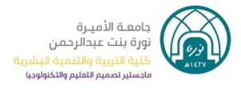
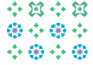

محاكي جاهزية PMP

محاكي جاهزية PMP · نموذج أولي
اختبار محاكٍ تشخيصي لشهادة إدارة المشاريع الاحترافية (PMP)
مشروع تصميم تعليمي معتمد على التكنولوجيا – نموذج ADDIE ضمن مجموعات عمليات إدارة المشاريع

من نحن
الشهادة
التسجيل
البطاقات
الاختبار
التقرير